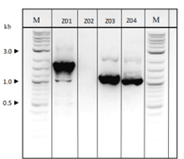
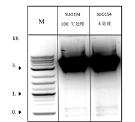
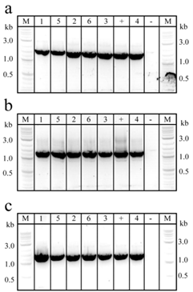
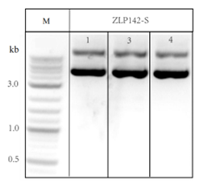
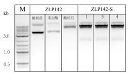

2. Anti-Counterfeiting Plasmid Construction
First, we need to synthesize DNA fragments containing anti-counterfeiting information, and at the same time, we need to complete the construction of the plasmid skeleton before integrating the anti-counterfeiting information into the plasmid. ZLP142 plasmid and pRS416 plasmid were selected as templates to construct ZLP142 PRS415-POT1-DNA storage vector with anti-counterfeiting information.
（1）Synthesis of DNA fragments containing security information
Experimental materials:
- original information
- PCR fusion primers
- PCR amplification primers
- FS
- ddH₂O
Experimental procedure：
- The three original text information are converted into specific DNA base sequences by preset algorithms;
- The converted base sequence is handed over to the company for chemical synthesis;
- After the fragment was synthesized, the primers were premixed and fused through the fusion procedure of the PCR instrument.
- The fusion product was diluted for 100 × for PCR amplification
（2）ZLP142 PRS415-POT1-DNA storage vector搭建
Experimental materials:
- ZLP142 plasmid and pRS416 plasmid
- primer
- enzyme
- ddH₂O
- column equilibration
- melt
- rinse
- competent cells
- ice
- anti-LB liquid medium
- Buffer
- dNTPs
- LB+carb medium
- extract
- rinse
Experimental procedure：
- Fragment amplification: ZLP142 and pRS416 plasmids were PCR amplified using primers, and agarose gel electrophoresis was performed by adding a loading buffer to each PCR product.
- Glue recycling: The target bands were cut and purified DNA fragments were recovered to obtain three fragments: Z01, Z03 and Z04
- CPEC (Cyclic Polymerase Extended Cloning):The four fragments were mixed and joined by a CPEC reaction to form a complete plasmid backbone.
- E. coli transformation:The CPEC product was transformed into E. coli DH-5α competent cells and coated on an antibiotic-containing LB plate to screen for positive clones.
- Colony validation:After monoclonal colonies were grown in the medium, 6 colonies were selected from the white colonies and colonies were verified with a 1000-fold dilution of CPEC product as a positive reference and ddH₂O as a negative reference
- Plasmid extraction and digestion verification: After successful colony verification, the plasmid is extracted. Extract concentration was determined by spectrophotometer, diluted to 100 μL, and 2 μL was performed by agarose gel electrophoresis to verify band size.
- The resulting plasmid was validated by digestion with ZLP142 as a control.

Electrophoresis results of ZLP142 plasmid and pRS416 plasmid PCR products
Since the primer SU0194 of the ZLP142 plasmid contains repeats, it is subjected to high-temperature heat treatment, followed by an ice bath, mixed with BZ-hAmp-F, and used for PCR amplification with FS

Electrophoresis results of Z02 fragment amplification products

Colony PCR results

Electrophoresis results of E. coli plasmid extraction products

Plasmid extraction product digestion verification results